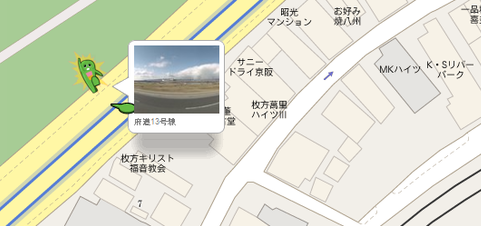

Virtual Tour
If I could award the entire Internet to the person who created Google Street View, I would do it in a heartbeat. While its implementation came along a smidge too late to be the indispensible resource for my research that it could have been (that and the fact that I like doing it in the Real World), it's great for those of you who are unable to go to Japan to get the full experience. As such, I have charted out some major locations for you to visit in Odaiba!
Just click and drag the image to operate the camera, and click the arrows to move along the street. Descriptions will be provided as though you were turning in a clockwise circle.
Area: Rainbow Bridge and Daibas
(Vamdemon's Base, fight scenes, Imperialdramon launch point, Diaboromon final battle)
You are nearing the Daiba exit of Rainbow Bridge. Directly ahead of you, the road curves to the right to enter the island. The Searea Ichibangai towers where Takeru, Iori and Miyako live are just beyond that. If you turn to your right, you can see Odaiba on the other side of Tokyo Bay, and the distinctive design of the Fuji Terebi building. In the foreground is the Dai-san Daiba, also known as Daiba-koen, the park where the children commemorate Odaiba Memorial Day in an early episode of Digimon 02. The squarish park, once a defensive battery protecting Tokyo from attack, is hollowed out in the middle - this is where Imperialdramon launches from in episode 39. If you continue to turn to 180 degrees from where you started, the bridge heads back to the Shinagawa side of the Bay. Further around is the divider that separates the south side of the bridge from the north side. The Yurikamome runs on the platform above you, but the pedestrian promenade that Miyako uses to cross the bridge in Diaboromon Strikes Back is on the same level as you.
Area: Koyo Elementary School/Junior High School
(Odaiba Elementary/Junior High School)
You are facing the front gates of the school. Looking right, Odaiba Mansion and Rainbow-koen are just down the street. Turning to the right again, you can see the beach. The spot where Hikari went to the Dark Ocean is at the nearby crosswalk.If you continue to turn, the towers of Searea Ichibangai (where the Hida, Takaishi and Inoue families live) are visible.
(The back view of the school, the one used in Adventure, is visible here.)
Area: Shiria-mae Crossing
(Scene of the fight between Koromon & Ogremon)
You are facing the convenience store, standing in the road. The overpass visible in the distance is the Yurikamome rail. Turning right, the Gobangai apartments are visible. Directly behind your original position is the corner where Hikari was left when Taichi, Agumon and Ogremon returned to the Digital World. Continuing in a cirle, you can see the shop Ogremon stood in front of. Above that is the Searea Sanbangai Towers, between which the portal to the Digital World opened in the same episode.
Area: Searea Gobangai Apartments
(Homes of the Yagami, Motomiya, Ishida and Takenouchi families)
You are facing the 25 Porticos (25 Doors public art). Two of the four apartments (including the one presumed to be Taichi's) are in sight. Turning in a circle, you can see down the road and DECKS in the distance. Behind your original position is a treeline, behind which is the beach. Continuing to circle, you can see the Shiria-mae crossing (the two towers are Searea Sanbangai) from the link above. The last two Gobangai apartments are visible if you point the camera up and to the right of the Porticos.
Area: Fuji Terebi
(Ishida Hiroaki's workplace, broadcasting station of the Digimon series, site of
Wizarmon's death and scene of the semi-final battle with Vamdemon)
You are facing the front of the Fuji Terebi building. As you are standing in the main road, most of what's around you is traffic and overpasses. Directly above you is the Yurikamome rail. The overpass you see when you turn 180 degrees and look up leads to Daiba Station. Almost completing your circle, you can see Aqua City.
Now you are behind Fuji Terebi, looking at it from the back. If you turn 180 degrees, you can see both the Palette Town ferris wheel and Teleport Bridge (the Dark Tower-looking thing). Turning further to the right, just beyond the flower patch in the intersection, is the parking lot where the Junior High School Rock Band concert that Yamato participated in was held.
Area: Teleport Bridge and Palette Town
(Scene of the final battle with Vamdemon)
You are in the Rinkai-sen Teleport Station parking lot, facing Teleport Bridge, a bridge that leads all the way from Palette Town to Searea Gobangai, where Taichi lives. Turning slightly, you can see the Palette Town daikanransha, the ferris wheel. If you continue to turn, you can still see Fuji Terebi behind where you started from. As you finish the turn you can partially see the Searea complexes behind the brown Suntory building.
Area: Tokyo Big Sight
(Where the town was held captive by Vamdemon)
You are facing Tokyo Big Sight. No other locations or places of interest are nearby, but if you zoom out to overhead view (you'll have to jump out of the frame) you can see the helipad on top of the West Wing, which was featured briefly in a late episode of Adventure and I, obviously, cannot take pictures of.